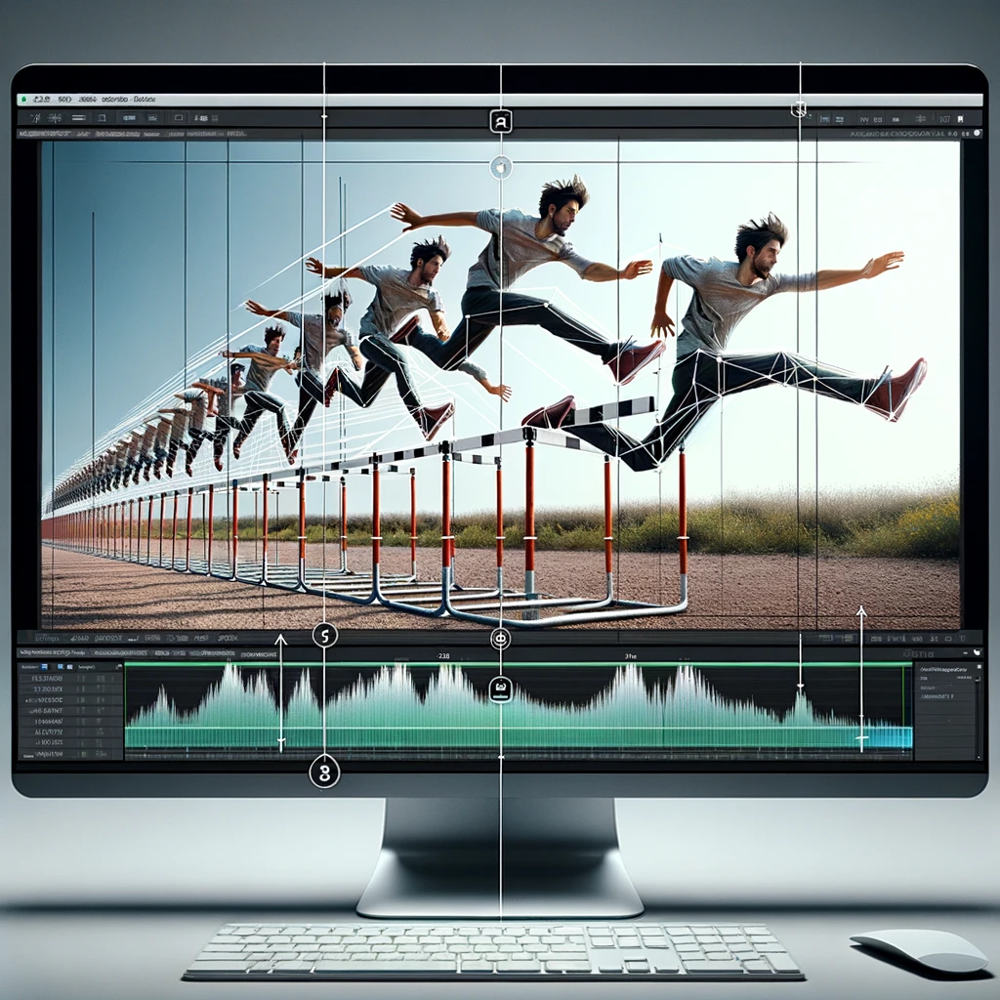
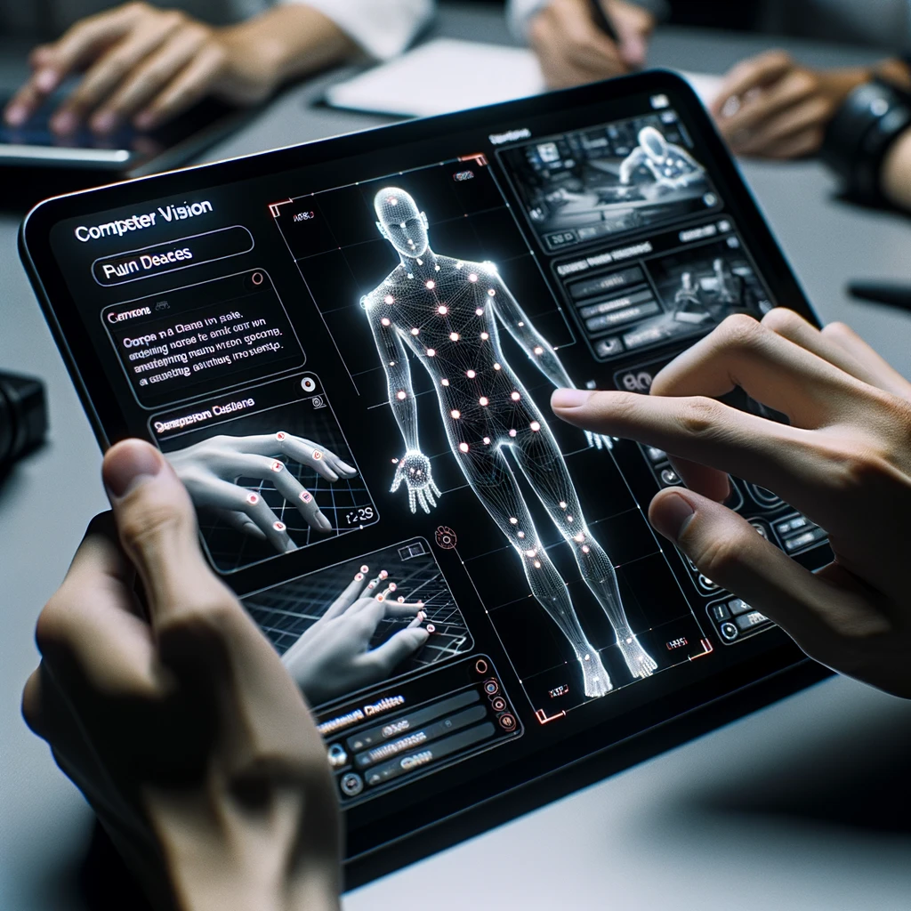

Showcasing a selection of significant projects that demonstrate my technical expertise, teamwork, and dedication to achieving project goals

Computer Vision [2023] (Ongoing)
Computer Vision enables machines to interpret and act on visual data, essentially granting them capabilities akin to human vision. Video Frame Interpolation, a subset of this field, focuses on predicting intermediate frames in videos, enhancing playback quality and enabling smoother visuals. In our current project, we explore advanced techniques in this domain, pushing technological limits.
In October 2023, our team initiated a group project on Computer Vision, focusing on Video Frame Interpolation Techniques. We've been leveraging the FLAVR network, known for its rapid frame interpolation capabilities, aiming to boost parameter efficiency. As we progress, we are comparing various interpolation methods against leading standards in the field. The model we're using integrates a 3D U-Net, combining spatio-temporal convolutions and channel gating, enabling us to precisely capture and interpolate complex motion trajectories. Our intent is to optimize the model to emphasize relevant feature map dimensions tied to motion. As of now, our research and development are ongoing and set to conclude in December.
HTX Capstone [2023] (Ongoing)
Home Team Science and Technology Agency (HTX) is Singapore's premier Science and Technology Agency, merging research and operations to bolster homeland security through cutting-edge technologies.
For our Final Year SUTD Casptone Project, spanning six to eight months from Sep 2023 to April 2024, our team is working together with HTX on developing a Virtual Reality (VR) training solution. This solution is complemented by custom haptic feedback gloves we're developing to enhance the VR experience with kinesthetic feedback. Our diverse team consists of Computer Science, Engineering, and Architecture students. We initiated this collaboration by presenting our concept to HTX. Currently, we're in the midst of the design thinking process, focusing on refining our VR solution and the haptic glove integration.

GovTech Internship [2023]
Singapore's Government Technology Agency (GovTech) spearheads public sector digital transformation to positively impact the daily lives of Singaporeans.
From May to August 2023, I worked as a Product Manager Intern at GovTech. I steered the development of a computer vision application designed to translate sign language into text, bridging the communication gap for the deaf community. Notably, I was the sole intern and primary developer on this project. My responsibilities encompassed researching emerging technologies and studying academic papers relevant to sign language recognition, which were pivotal in shaping the project's trajectory and features. Beyond coding, my role extended to comprehensive product planning, stakeholder interactions, and vendor coordination. A significant part of my involvement was actively engaging with the deaf community, from which I acquired critical feedback and sourced videos for the dataset.
DSTA Brainhack XRperience [2023]
Defence Science and Technology Agency (DSTA) is a leading technology organization dedicated to enhancing the capabilities of the Singapore Armed Forces through innovation, cutting-edge technology, and multidisciplinary expertise in areas such as systems engineering, cybersecurity, and digital platforms. DSTA hosted a hackathon and invited students to join.
In June 2023, at the DSTA Brainhack Hackathon, my team developed a VR game focused on sustainable living. The game showcased realistic daily scenarios, highlighting areas where players often overlook sustainable choices. At the game's conclusion, players are confronted with the outcomes of their decisions, promoting experiential learning and active engagement with sustainability principles. Our game was recognized as one of the top 5, especially notable since it was our first experience with XR/VR development.
Kinexcs Internship (MedTech Startup) [2022]
Kinexcs is an AI-powered digital health and wearables MedTech Startup dedicated to enhancing mobility and improving the overall quality of life for individuals.
Scrum is an agile framework that promotes collaboration among teams to address complex problems and deliver high-value products. It's designed to improve productivity by breaking down large tasks into manageable "sprints" and regular feedback cycles. MedTech startups, like Kinexcs, aim to leverage innovative technology to address challenges in the medical and healthcare sectors.
During my tenure from September to December 2022 at Kinexcs as a Software Developer Intern & Scrum Master, I played a pivotal role in introducing and integrating the Agile Scrum framework within the organization. As the Scrum Master, I led three distinct digital product development teams, ensuring adherence to agile principles and fostering team collaboration. Alongside these responsibilities, I developed an Android computer vision app in Kotlin that aids users in their mobility exercises, providing immediate visual and auditory feedback. This project required me to undertake self-driven learning to establish a proof-of-concept with limited technical guidance.
Accenture [2017-2020]
Before embarking on my further studies at SUTD in 2020, I was working full-time in Accenture and doing my specialist diploma under the earn and learn scheme. Accenture is a global professional services firm renowned for its expertise in strategy, consulting, digital, technology, and operations.
Between July 2017 and December 2018, as a New Development Associate at Accenture, I worked on updating a client's legacy web application. My role involved adapting the application for integration into a DevOps CI/CD pipeline. Additionally, I made enhancements to an external vendor's web platform, using specific scripting and JSON configurations to meet the client's needs.
From January 2019 to February 2020, as a Development Associate, I was involved in developing a financial web application for a prominent sovereign wealth fund. I was a full stack web developer. I used a stack that included Dot Net Core & Angular, creating custom controls and dashboards. I integrated tools like AG-Grid, Elastic Search, and Redis and managed the database with SQL views, stored procedures, and CRUD operations for MS SQL DB. I also wrote batch scripts for integration between our platform, external bank files, and third-party vendor applications. Throughout, I followed scrum agile methodologies to maintain project efficiency.